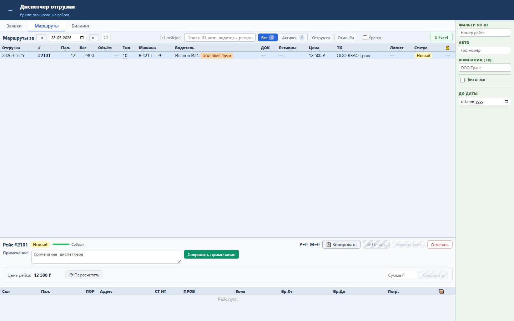
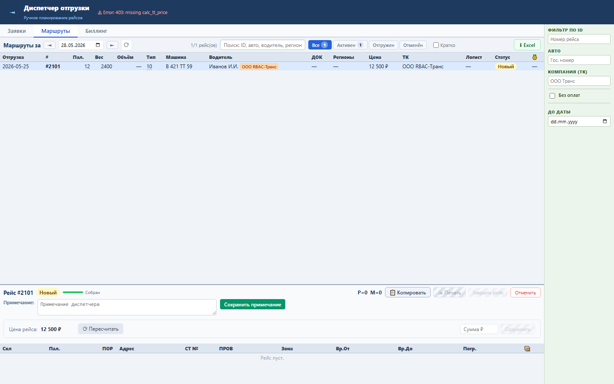

Блок отделяет биллинговые права от прав диспетчера: создание и изменение счетов, пересчёт цены и ручная цена проверяются разными Oracle-правами.
Используются права edit_bill_tt, calc_tt_price, create_tt_price; рейс хранит цену и связь со счётом через PRICE и PAY_ORDER_ID.
Пользователь без нужного права видит отказ, а UI не считает операцию успешной.


Проверка: functional, UI smoke и load gates пройдены.